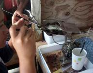
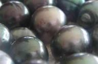
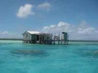
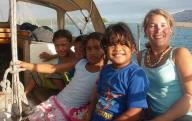
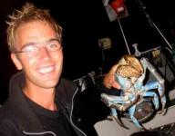
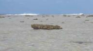
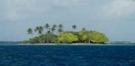
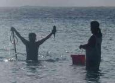
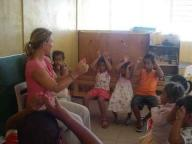
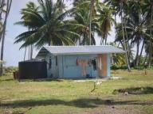

|


|
Parels
» exacte locatie
 We hebben het nog niet genoemd, maar eigenlijk zijn de Tuamotu's vooral bekend vanwege de parelboerderijen. Het onderwaterklimaat is hier namelijk ideaal om parels te kweken. Gisteren hebben we zo'n boerderij bezocht. Je moet je daarbij het volgende voorstellen: een klein houten huisje op palen in ondiep water en daaromheen in dieper water een aantal boeien. De boeien zijn het startpunt voor een web van dieper zwevende lijnen waaraan de oesters groeien. De oesters hangen hier niet kaal, maar zijn
omringd door een plastic cylindervormige kooi om ze te beschermen tegen de vissen. Als de oester een jaar oud is wordt deze uit het water gehaald en naar het houten huisje gebracht. Daar hebben ze een uur de tijd voor de oester het benauwd krijgt om te "opereren". Er wordt dan een speciaal in Japan gefabriceerd balletje in het lichaam van de oester geimplanteerd. Daarna mag de oester weer terug het water in. Een jaar later is er hopelijk rondom het balletje een parel gevormd. Sommige oesters maken
mooiere parels dan anderen. In de goede oesters wordt het beste van de oogst teruggezet zodat er grotere parels worden gevormd. Soms kan dit wel vijf keer! De slechte oesters worden opgegeten. Het geheim van het kweken van parels zit in de operatie van de oester. Kwekers houden dat voor elkaar geheim. Waar precies een sneetje te maken, hoe diep, wat voor balletje en zelfs het toevoegen van kunstmest uit een mysterieus en erg duur flesje. Wij mochten het hele proces wel zien, want we kenden natuurlijk
de precieze details niet. Een oogst parels wordt verkocht in Tahiti. Vroeger ging de parelbaas waar wij mee spraken ook naar Los Angeles om te verkopen, maar het risico van een gewapende overval was nu te groot geworden. Dat gedeelte klonk wel als een spannend filmscript. Ilse was vooral erg enthousiast over de parels en in ruil voor flink wat kleding en wijn konden we er een aantal bemachtigen. Geen honderd procent perfecte exemplaren, maar toch erg mooi.
We hebben het nog niet genoemd, maar eigenlijk zijn de Tuamotu's vooral bekend vanwege de parelboerderijen. Het onderwaterklimaat is hier namelijk ideaal om parels te kweken. Gisteren hebben we zo'n boerderij bezocht. Je moet je daarbij het volgende voorstellen: een klein houten huisje op palen in ondiep water en daaromheen in dieper water een aantal boeien. De boeien zijn het startpunt voor een web van dieper zwevende lijnen waaraan de oesters groeien. De oesters hangen hier niet kaal, maar zijn
omringd door een plastic cylindervormige kooi om ze te beschermen tegen de vissen. Als de oester een jaar oud is wordt deze uit het water gehaald en naar het houten huisje gebracht. Daar hebben ze een uur de tijd voor de oester het benauwd krijgt om te "opereren". Er wordt dan een speciaal in Japan gefabriceerd balletje in het lichaam van de oester geimplanteerd. Daarna mag de oester weer terug het water in. Een jaar later is er hopelijk rondom het balletje een parel gevormd. Sommige oesters maken
mooiere parels dan anderen. In de goede oesters wordt het beste van de oogst teruggezet zodat er grotere parels worden gevormd. Soms kan dit wel vijf keer! De slechte oesters worden opgegeten. Het geheim van het kweken van parels zit in de operatie van de oester. Kwekers houden dat voor elkaar geheim. Waar precies een sneetje te maken, hoe diep, wat voor balletje en zelfs het toevoegen van kunstmest uit een mysterieus en erg duur flesje. Wij mochten het hele proces wel zien, want we kenden natuurlijk
de precieze details niet. Een oogst parels wordt verkocht in Tahiti. Vroeger ging de parelbaas waar wij mee spraken ook naar Los Angeles om te verkopen, maar het risico van een gewapende overval was nu te groot geworden. Dat gedeelte klonk wel als een spannend filmscript. Ilse was vooral erg enthousiast over de parels en in ruil voor flink wat kleding en wijn konden we er een aantal bemachtigen. Geen honderd procent perfecte exemplaren, maar toch erg mooi.



|
reageer!
Joost en Ilse, 24/8/2007, 08:00
|
Kinderen op bezoek
» exacte locatie
Een nieuw atol! We zijn op Kauehi. Na een tochtje met veel wind en lastige golven kwamen we in het donker aan voor de ingang. Niet erg, achter het atol zijn geen golven en de wind werd ook minder dus zijn we heen en weer gaan zeilen tot het licht werd. De ingang was een stuk makkelijker dan die van Raroia. Het dorpje hier leeft ook meer, we komen meer mensen tegen. Leuk is dat, loop je op straat (ehh, gemalen koraalweg), dan begroeten ze je met 'bonjour' ze pakken je hand met twee handen en zeggen
hun Polynesische naam (zoiets als Miahori of Taverio). Een paar spelende kinderen kwamen op ons af en vroegen of ze onze boot mochten zien. Dat vonden we goed maar we gingen het wel eerst aan de ouders vragen. Vier stel ouders langs en die vonden het allemaal prima. Volgende dag na school heb ik ze opgehaald met het bijbootje. Eerst de boot bekeken en wat drinken met popcorn. Daarna ontdekten ze m'n pot met kraaltjes en dat was ook de bedoeling... Ze hebben een mooi armbandje gemaakt alleen het
jongetje had daar niet zo'n zin in dus die heeft Joost vermaakt. Twee kinderen waren door het dolle heen en de andere twee waren lekker rustig. Wel lastig niet zo goed Frans te kunnen, want als een kind iets raars deed (bijv. met twee handen zoveel mogelijk popcorn tegelijk in z'n mond proppen) kon ik hooguit zeggen 'ce n'est pas gentil de toi'. Ze lachten vaak om onze uitspraak. Ze hadden er veel lol in om ons Frans te imiteren. Het was ook niet helemaal duidelijk dat we hen niet altijd begrepen.
Ze herhaalden steeds harder precies hetzelfde zinnetje, uiteraard zonder dat het voor ons duidelijker werd. Toen de kinderen de enige pompelmoes (grote zoete groene grapefruit) die we hadden zagen werden ze helemaal wild! Ze reageerden op het fruit als een Nederlands kind dat friet ziet. Die hebben we natuurlijk met hen opgegeten. De kinderen hadden voor mij ook iets meegenomen. Een hele mooie schelpenketting (de avond ervoor met mama gemaakt) en twee hele grote glimmende schelpen. Het was een drukke,
maar geslaagde middag.

|
|
|
Het krabfestijn
» exacte locatie
De krab bij de Polynesische maaltijd was toch wel ons favoriete gerecht. Eigenlijk kenden we de smaak van krab niet echt, hoogstens van die vage vacuum gezogen imitatie-krabsticks uit de supermarkt. Vers uit zee en dan direct gebakken in de pan is toch wel wat anders. De kopraverzamelaars, Larice en Pioe, herkenden ons enthousiasme en stelden voor om als volgend diner meer krab te eten. We hebben daar aan toegevoegd deze keer op onze boot te eten zodat wij de bijgerechten konden maken. Vonden ze
een goed idee en we spraken af dat ik hen rond zonsondergang zou ophalen met ons bijbootje en dat we op een groter eiland krabben zouden gaan vangen. Dat gaat namelijk beter in het donker. En wat een monsters liepen daar rond! Echt ongelofelijk zo groot als die beesten daar waren. We hebben er vier gepakt en meegenomen naar hun eiland om te koken in water. Onze pan was niet groot genoeg. Terug op de boot had Ilse de bijgerechten klaar en hebben we de krabben opgegeten. De smaak was echt uitzonderlijk,
we waren helemaal onder de indruk. En wat betreft de hoeveelheid waren we net miljonairs. Niet een klein hapje krab. Nee, echt hele hompen krabvlees. Moet in een restaurant zeker een vermogen kosten. Aan het eind van de avond zaten we helemaal vol en lag er ook nog een krab in de koelkast voor vandaag bij de borrel. Larice en Pioe kenden de krab uiteraard al, maar waren aangenaam verrast door onze aioli, Calve cocktailsaus, gebakken aardappels met rozemarijn, pompelmousse (die groeien hier niet)
en DE koffie met cake met kruidkoekkruiden.

|
|
|
Kontiki eiland
» exacte locatie
Na een heerlijke nachtrust zonder beweging in de boot zijn we 's ochtends op verkenning gegaan. De rand van het atol bestaat uit een verrassend vlak rif waarboven het water slechts enkel- tot kniediep is. Het is een paar honderd meter breed. Aan de binnenkant loopt het geleidelijk af en is het water kalm. Aan de buitenkant loopt het steil naar beneden de diepte van de oceaan in en breken de enorme golven met geweld in het plotseling ondiepe water. Als we op onze boot zitten horen we een mengsel van
kabbelend water rondom ons en gebulder van de brekers verderop. Verder liggen her en der op het rif eilandjes met vooral kokospalmen. Kontiki eiland is een van die eilandjes. Met het bijbootje zijn we er heen gevaren en vanaf daar te voet over het rif. Dit was voor ons weer een nieuw gezicht. Maar terwijl we genoten van het landschap zag ik ineens een zwart driehoekje boven komen recht voor ons. Het zwom zoekend rond door het kniediepe water. Maar blijkbaar had het ons ook opgemerkt, want het verlegde
ineens duidelijk zijn koers en kwam nu recht op ons af. Het was dan wel een kleine haai, maar je weet toch maar nooit. Voor de zekerheid zijn we snel naar een in de buurt liggende steen gelopen die boven water stak. De haai verloor interesse en dwaalde af. Daarna zijn we toch verder gelopen, gerustgesteld doordat er overal van zulke stenen lagen. De buitenrand van het rif was erg spectaculair. De brekende golven vlakbij terwijl we nog steeds slechts water tot onze enkels hadden. We klommen op een
grote steen voor een paar foto's. Daar was echt een forse breker. En wat een hoop schuim. We waren wel verrast dat het schuim helemaal bij ons kwam. Dat was nog niet eerder gebeurd. Toen het waterniveau tijdelijk ineens een meter steeg tot vlak onder de bovenkant van de steen waarop wij stonden waren we niet alleen verrast maar ook een beetje bang geworden. De algemene stroming was dan wel het atol in, maar misschien was er wel een soort zuigende onderstroom. Op een rustig moment klommen we snel
de steen af en haastten we ons terug naar het midden van het rif. Eenmaal veilig daar vonden we onszelf toch wel een beetje onvoorzichtig. De steen waarop we stonden werd in de verte weer bijna overspoeld door een nieuwe golf. Terug op onze boot liggend op deze totaal verlaten plek hoorden we ineens stemmen. Zo totaal verlaten is het hier dus toch niet. We kregen bezoek van twee mannen in hun boot. Ze waren hier om kopra te verzamelen en kwamen even gedag zeggen. Een poging van ons om in het Frans
een vraag over parels te stellen mislukte, want het antwoord was dat we om drie uur vis konden komen eten op het eiland. Ook goed. Met een pan kerrierijst en vier koude blikjes bier mee hebben we dat gedaan. En het was echt fantastisch. Ze hadden net hun kamp ingericht, want ze waren van plan om drie weken op Kontiki eiland te gaan wonen. Elke dag heen en weer vanaf het dorp was te ver voor hen. Alle basale spullen hadden ze mee. Eten zoals meel, water, zout, kruiden, koffie en handige spullen zoals
een kokosnootschraper, speargun, radio en machetes. We werden echt als gasten behandeld en zij bereidden typische Pacific-gerechten. Gerookte vis, poisson cru (rauwe vis in kokosmelk), gebakken krab en kokosbrood. Alles zeer geroutineerd uitgevoerd. Even een paar vissen uit de zee speren, krabbetje schoonmaken, vis slachten (oppassen voor naar achter gerichte giftige slachttand, vastpakken met vinger in de bek), kokosnoot splijten, vuurtje aanwakkeren, spullen opgeruimd houden en zelfs grote bladeren
onder de pannen op de tafel ter decoratie. Toen het klaar was schepten ze voor ons van alles wat op twee bordjes en mochten we eten. We vroegen of ze zelf niet gingen eten. Nee, straks. Geamuseerd keken ze toe hoe we worstelden met de krab en wat we vonden van de poisson cru. Daarna schepten ze zelf ook op. Na ze uitgebreid te hebben bedankt lieten we ons met het bijbootje terugdrijven naar Hafskip, onszelf verwonderend over deze ongelofelijke gastvrijheid.



|
|
|
Schooltje
» exacte locatie
In Nederland zijn veel scholen deze week weer begonnen maar hier al een weekje eerder. Ik kreeg er de kriebels van, ik wilde ook wel weer aan de slag. Dus afgelopen zondag gingen we op zoek naar de directeur van het schooltje hier. Hij woont naast de school, dus makkelijk te vinden. En ja, kom maar kijken! Het schooltje bestaat uit twee lokalen, op de eerste verdieping gebouwd zodat de kinderen eronder in de schaduw kunnen spelen. In totaal 21 kinderen. De directeur had groep 4 tot en met 8 en de
andere juf de jongste kinderen. Ze gaan hier al vanaf 2,5 jaar naar school. In de rest van Frans Polynesie vanaf vijf jaar. Het is een uitprobeersel en ze vond het wel lastig met die allerkleinsten erbij. Ik ben eerst bij de directeur in de klas gaan kijken en hij was van alles aan het vertellen over de Kontiki. De Kontiki was het zeilvlot van Thor Heyerdahl dat hij heeft gemaakt in 1947 van materialen die hij aan de kust van Zuid-Amerika vond. Zijn doel was om naar Frans Polynesie te varen en daarmee
te bewijzen dat dit in oude tijden ook gebeurde. De reis eindigde met een stranding op Raroia. Ondertussen kon ik mooi even in de lesboeken snuffelen en dat zag er allemaal erg leuk uit. Bij aardrijkskunde leren ze hoe een atol ontstaat en worden de kernproeven op het atol Mururoa niet verzwegen. Frankrijk komt ook uitgebreid aan bod en zelfs de Europese geschiedenis terwijl dat voor deze kinderen niet echt aansluit bij hun belevingswereld. De directeur heeft vier niveaugroepen van zijn klas gemaakt
en aan beide kanten van de klas staat een schoolbord, zo heeft hij elk groepje gericht naar een eigen stuk schoolbord, handig. Na nog even op de kaart te laten zien (leuk, eentje met de Pacific in het midden) hoe Joost en ik zijn gevaren ging ik naar de andere klas. Ze waren net bezig met kralen rijgen en ik kreeg meteen een stoel zodat ik kon helpen. Het niveauverschil zat 'm in de grootte van de kralen. Een klasje van 8 kinderen waarvan 2 kinderen leren lezen en schrijven. Het zijn dan wel heel
weinig kinderen maar de moeilijkheid zit 'm erin dat je bijna individueel les geeft. De juf vroeg of ik de kinderen een Nederlands liedje wilde leren. Ik heb het liedje 'lief klein konijntje had een vliegje op zijn neus' met ze gezongen. Erg leuk. Samen met de juf kwam ik wel op de Franse woorden om uit te leggen waar het liedje over ging. Veel bewegingen bij het liedje dus bij 'konijntje' flapperden ze allemaal met hun handen op hun hoofd. De juf wilde het wel vastleggen op video dus 's middags
kwam ik nog even terug en heb het liedje nog een paar keer gezongen en sommigen konden 'm al meezingen. Een leuke ervaring. Aan de directeur hebben we gevraagd hoe we bij het eiland kunnen komen waar de Kontiki is gestrand. Vanaf het dorpje kon je het eilandje net zien, precies aan de overkant van het atol. Bij het dorp lag de boot nogal onrustig dus besloten we naar Kontiki eiland te verhuizen. Een tochtje van twee uur binnen het atol. Was niet al te moeilijk, overal is het zo'n dertig meter diep
alleen steekt er af en toe een soort koraaltafel omhoog tot een meter onder water. Met de zon in de rug waren die goed te zien. En wat een rust hier. En wat een uitzicht. En verder helemaal niemand.

|
|
|
Ons eerste atol
» exacte locatie
Een atol. Iets dat vroeger een vulkanisch eiland is geweest. In de warmte van het ondiepe water rondom het eiland begon koraal te groeien. De vulkaan was niet langer actief en het eiland, vaak een holle krater, werd langzaam weggesleten door weer en wind. Uiteindelijk is het hele eiland verdwenen en blijft alleen een ring van koraal over. We liggen nu voor anker binnen de ring van het atol Raroia. Op de plek dus waar vroeger het eiland was. Het was mogelijk binnen te varen via een opening in het
koraal. Op deze plek mondde ooit een rivier uit die langs de vulkaan naar beneden stroomde. Het zoete water van deze rivier verhinderde dat er op die plek koraal heeft kunnen groeien. Eb en vloed hebben ook invloed op het atol. Het water in het hele atol wordt met grote snelheid door dezelfde opening als waar wij doorheen gekomen zijn naar binnen gestuwd of naar buiten gezogen. De stroomsnelheid is zo groot dat boten soms rondtollend om hun as op een stuk koraal worden gesmeten zonder dat daar met
de motor vol gas iets aan te voorkomen is. Het is de kunst om precies op het moment dat eb in vloed of vloed in eb verandert je in de opening te wagen. Helaas is daarvoor geen tabelletje met datums en tijdstippen beschikbaar. In plaats daarvan hadden we een paar aanwijzingen ten op zichte van de stand van de maan. Wij moesten naar binnen anderhalf uur voordat de maan onderging. De dagen voor onze aankomst hebben we dus steeds geprobeerd te noteren wanneer de maan onderging om te voorspellen wanneer
dat op de dag van aankomst zou gebeuren. Dat was moeilijk, want telkens voordat de maan overdag onderging was hij al niet meer te zien door de felle zon. Ook hangt de tijd af van je lokatie op aarde en toen we begonnen met noteren waren we natuurlijk nog niet op de plaats van de opening. Uiteindelijk hebben we een tijd uitgevogeld. Helaas kregen we toen te maken met windstilte waardoor we te laat aankwamen. We besloten om de nacht met een klein zeiltje op buiten het atol wachtend door te brengen
en de volgende dag op een nieuw berekende tijd in te zetten. Bijna kwamen we weer te laat omdat de wind onverwacht hard tegen ons was gekeerd en we in de nacht toch best weer een stuk weggedreven waren van de doorgang. Maar na een paar uur hard zeilen waren we er dan eindelijk. Tja, en toen. Alle zeilen maar naar beneden gehaald en voorzichtig een beetje met de motor aan voor de doorgang heen en weer geschuifeld. In de doorgang waren vreemde witte golfkoppen te zien. Het leek toch nog fors te stromen,
dus we besloten nog wat langer te wachten. Mogelijk was onze schatting van de maan niet helemaal goed. Maar na een half uur begon het gevoel toch te knagen dat het ook wel eens al voorbij zou kunnen zijn. Bovendien kwam in de verte een zwarte regenwolk aan. Dat is ook niet handig, want door zo'n wolk is het koraal waar je mogelijk tegenaan kan botsen niet meer te zien onder water. We zijn er toen maar in gevaren. Door de witte kopjes heen, met het anker standby en heel goed oplettend of we niet ongewild
een verkeerde kant op gezet werden. En het ging perfekt. Er bleek nauwelijks stroming te zijn en zonder problemen voeren we het atol binnen. Een hele opluchting. De eerste dag zijn we de boot nog niet af geweest en hebben we ontspannen een beetje gerommeld. Het water rond de boot is erg helder, alleen wordt snorkelen niet aangeraden vanwege de vele haaien. Voordat we dat hoorden waren we al wel even wezen snorkelen. Geen haai gezien. Maar een andere boot die hier ligt heeft een experimentje gedaan
met de bloederige kop van een tonijn in het water en dat schijnt vrij spectaculair te zijn geweest. Vandaag zijn we met het bijbootje naar het dorpje geweest. Weer erg vriendelijk mensen die heel actief zijn met kokosnoten. Het hele eiland staat vol met kokospalmen. Rond veel huizen ligt een klein kokosnotenkerkhof. Op sommige plekken worden kokosnootschillen verbrand. Op de kade staat een schuur met kopra, het witte vlees van de kokosnoot, dat af en toe opgehaald wordt door de kopraboot. Verder
worden in het atol parels gekweekt. Water is hier niet beschikbaar. Daarvoor heeft elk huis een eigen voorraad in een grote regenton waar de dakgoten op zijn aangesloten. De huizen hebben overigens een hoog doe-het-zelf gehalte. Favoriete materialen zijn golfplaat en multiplex. Binnenkort waarschijnlijk meer over Raroia.

|
|
|
|
|
|
|
|